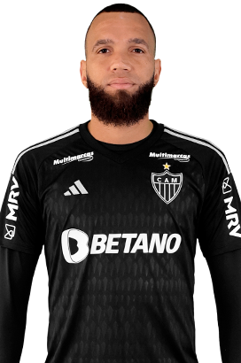
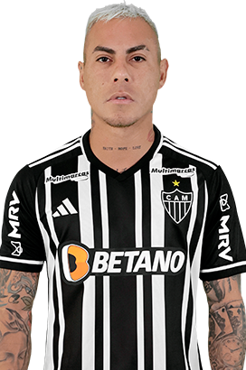

Selecione um Jogador
- 
- 

Hulk
Givanildo Vieira de Sousa, mais conhecido como Hulk ou Hulk Paraíba, é um futebolista brasileiro que atua como atacante. Atualmente, joga pelo Atlético Mineiro.

Givanildo Vieira de Sousa, mais conhecido como Hulk ou Hulk Paraíba, é um futebolista brasileiro que atua como atacante. Atualmente, joga pelo Atlético Mineiro.